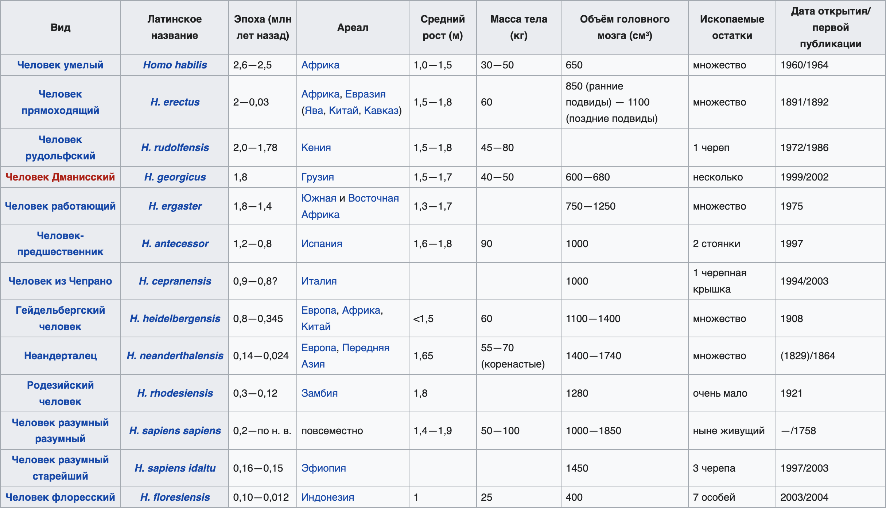
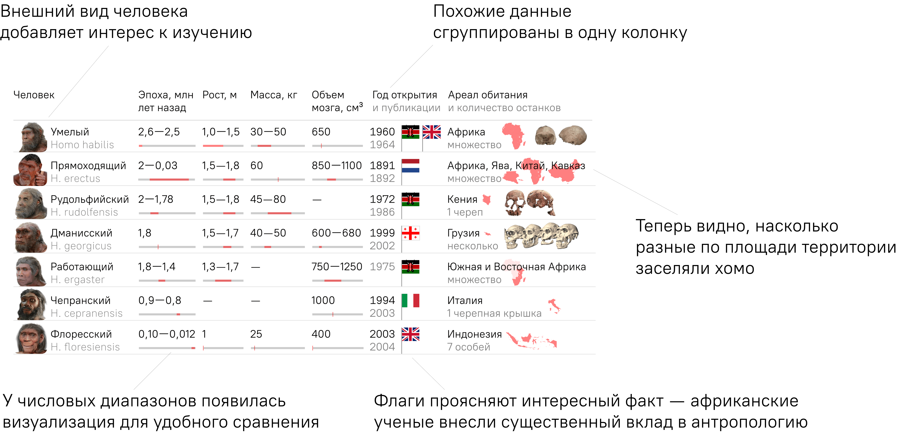

Переверстка таблицы про виды хомо
 Подробный разбор на ютубе
Подробный разбор на ютубе
Изначальная таблица и ее проблемы
Я исхожу из предположения, что абстрактный усредненный посетитель хочет с помощью этой таблицы увидеть разницу между своими предками. Но оболочка не дает ему удобной возможности для этого.
В таблице много цифр и диапазонов, которые надо держать в голове, чтобы сравнить. Большое количество несгруппированных колонок делает таблицу визуально сложнее.
А самое главное — теряется потенциал данных, которые можно превратить в легкую и интересную визуализацию.
Моя таблица и решение проблем
Теперь таблица выполняет свою функцию — помогает сравнивать виды людей. Фотки оживляют мертвые названия видов. Визуализация числовых диапазонов помогает сравнивать как средние значения, так и разброс. Флаги показывают дополнительную информацию. Кусочки с глобуса показывают, насколько был расселен вид, а не просто говорят, где он обитал.
Таблица без подписей